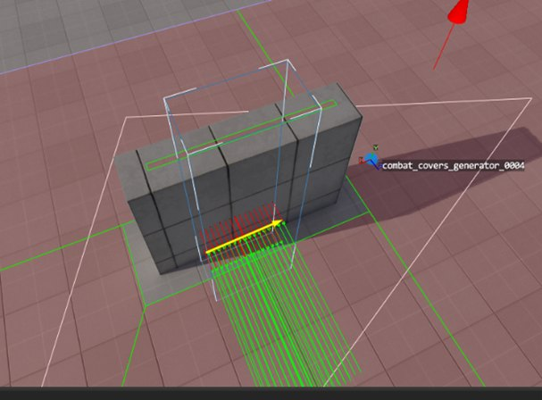
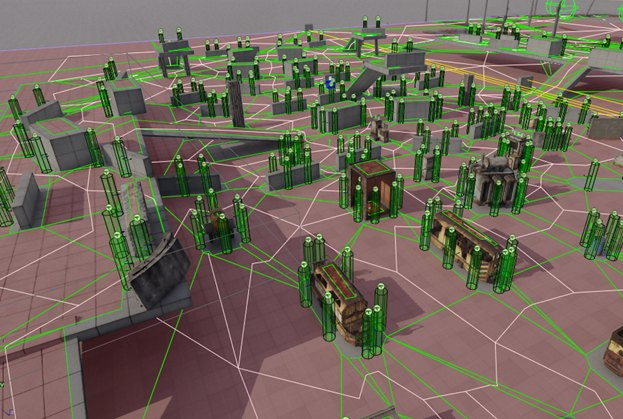
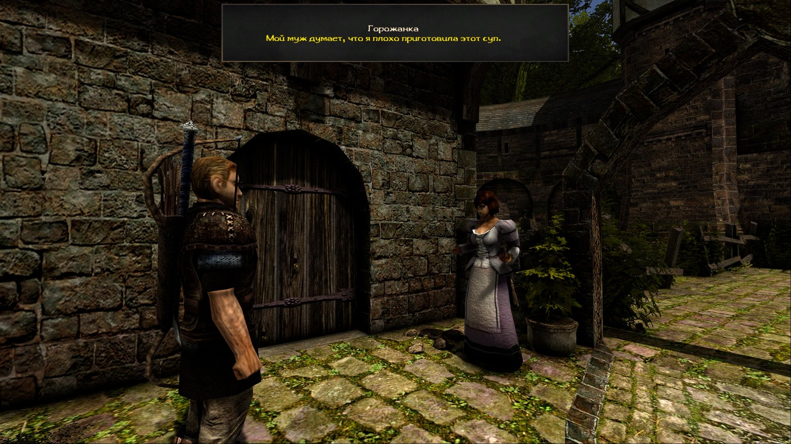

In previous articles I already touched a little on the art of deceiving the player properly, through coyote time and fudging hit registration. Looking at those cases, you've probably noticed that good game code spends a lot of its time building a model of the world that matches, closely enough, what a human expects from the game.
Navigation in games needs just as much hacking, except this time you're not dealing with jump timing or the character's physical state as the player perceives it, but with a pile of polygons, nodes, edges and costs, and everything else that decides an NPC's path across the map. And once again, what matters is what the player expects from the NPC, not whether the behaviour is technically correct.
In strategy games the bots usually have a very simple job: get through some gate or chokepoint, go around a wall and end up in the courtyard. As long as we have one soldier walking across an empty map, there's no real problem. But add ten, fifty, a hundred, two hundred soldiers and a single gate that only a few units can physically squeeze through at once, and it turns out they just don't, even though the pathfinding algorithm (A* or similar) did its job perfectly. It did its job, sure, but the little soldiers are standing there dumbfounded, and it turns out we're asking it to solve a problem it was never designed for.
Our two hundred NavMeshAgents all got the same order at the same moment to run to one poor gate. They find their routes quickly and move across the map, but as they get closer to the gate the space gets tighter, and some of them bunch up fifteen metres from the opening, start jittering a bit, and a few even back off while others try to squeeze between their neighbours. Meanwhile, maybe a dozen make it into the courtyard.
If at this point we open the profiler and look at the stuck soldiers, we see that A* is taking a lot of time, and it's taking a lot of time because every NPC needs a path, so we have two hundred path searches, pathfinding is slow, and obviously we need to optimize pathfinding so it runs faster. Not so obvious...
Not so obvious, because we're trying to solve the global navigation question, "how do I get from point A to point B", while crowd behaviour is governed by a different question: "how do I follow this route when there are a few dozen characters just like me right next to me".
Visually both problems look the same, the soldier just has to reach the target, but if you mix up the solutions you can spend hours tuning A*, changing radii, rebaking the NavMesh, cranking up repulsion, and still watch that crowd at the gate that clearly knows where it needs to go but just can't get there.
(Try it yourself) You can adjust the gate width and the number of agents and watch the jam form in real time.
How NavMesh works
Why does a character get "stuck" in a doorway when the opening looks wide enough both in the editor and in the game? A NavMesh isn't the floor you see in the viewport; it's separate geometry built on top of the walkable surface, taking into account the parameters of a specific navmesh agent. So a corridor that looks wide can turn out to be a pretty tight spot from the point of view of the NPC's centre, because its radius has to be shaved off the walls so it doesn't snag on those very walls (the grey area is around the geometry, the red is the navmesh)


In our scene the gate was 1.6 metres wide and the Agent Radius was half a metre. From the designer's and player's point of view the gate looks wide enough for a whole three NPCs to walk through, but look at it through the NavMesh algorithm's eyes and you have to leave half a metre on each side, which leaves only 0.6 metres for the agent's centre. In other words, a 1.6-metre gate lets exactly one NPC through.
One agent still gets through, two agents side by side already start getting in each other's way, and if you march two hundred characters up to it, you get the situation where the navigation mesh says a path exists, but the local movement system is physically incapable of getting even one of them along it.
You could try shrinking the Agent Radius to 0.35 metres, which is very tempting and fixes the problem locally, especially if you only look at this particular door, but the entire navigation geometry changes along with it, and NPCs start hugging walls, clipping into geometry, and getting into places the level design never meant for them to fit. Your tiny local optimization has unexpectedly broken half the level, and seeing these specific problems, the designer decides not to touch the agent, and does what? Exactly... makes the gate wider (look at door sizes, especially in older games: they weren't taller and wider for nothing, it's all a consequence of the "gate problem")

Which is also a good example of why NavMesh parameters can't be treated as cosmetic settings, and why the navmesh agent radius isn't just "how fat a circle to draw around the character", but a parameter that determines where walkable space exists at all.
The agent is stuck
There's another flavour of this problem, where we're sure the character got stuck somewhere along its route, when in fact it never had a route at all, because the target is outside the navmesh. The agent stands still, QA says the character gets stuck, the programmer opens the profiler and finds nothing suspicious, starts looking at A*, then at the NavMesh, then at local repulsion, and then it turns out A* never even ran. It's hard to blame the programmer here, and the designer usually sees this as a navigation bug and files a bug about it.
Yet another flavour is when a path exists but ends at the nearest reachable point, and from the outside this again looks like "the NPC is stuck". In general this forces you to first snap the target back onto the navmesh and only then work with it. It also explains why NPCs can't go to arbitrary places the player can climb into.
(Try it yourself) Click inside a wall: the target will either snap to the nearest walkable point or (if there's no walkable area nearby at all) stay where it is
One more way to keep A* from searching
Gaps between NavMesh sections are a problem too, which is why stairs, pits, doorways and other places where navigation isn't one continuous surface need an OffMeshLink. And that brings its own trouble, because the mere existence of several routes doesn't mean the system will pick the one a human considers sensible.
Say we had a 1.2-metre gap you could pass through, and with the default link cost of 1.0, about 140 of 200 agents tried to get through it, even though there was a longer but less congested route on the map.
To a computer, if one path is cheaper than another, you take the cheap path, and the fact that a queue has already formed there is often not reflected in the route cost at all. Raising the link cost made most agents choose the other route, which shows how the mechanism of filling up crossings works, but plain A* can't figure this out on its own, because it only optimizes the path cost it's been given.
(Try it yourself) Change the cost of crossing the link to watch the agents redistribute themselves from the chokepoint to the wide detour.
When A* starts getting expensive
Now we can finally talk about A* itself, although after the previous problems it's already clear that the algorithm simply can't solve some of these tasks. A* expands nodes and compares costs to find a route, and if the navmesh has 41K polygons and you need a path from one edge of the map to the other, then a single such query in the test scene touches, on average, more than a third of all polygons.
Say one such query takes 0.35 milliseconds; then trying to run two hundred of them at once physically gives you 70 milliseconds. We learned to work around cases like this long ago, and for about twenty years real systems have been queueing navmesh queries, and until the path is ready (which may take a few frames) the agent keeps moving along its old route. The problem doesn't always look like a freeze; sometimes it's just a harmless delay, where the character spends a couple of frames walking into a wall or lags behind.
Hierarchical A*
If the map consists of several large areas with relatively few crossings between them, there's absolutely no need to make A* explore all 41K polygons every time, because we already know quite a lot about the level's structure in advance and can first figure out which large areas we need to pass through at all.
To do this, you can split the map into regions and build a portal graph between them, then first search for a route on this coarse graph, which may contain just a few dozen nodes, and only after that run a detailed search inside the regions the route actually passes through.
First we get something like A → B → C, i.e. we determine the route across large regions, and only then search for the detailed path Agent → Portal B → Portal C → Target, so we don't make every query reconsider the whole map, even though to the agent itself the end result looks exactly as if it had built an ordinary full route.
What's more, this coarse graph can be built once when the level is built or loaded, and only updated when an obstacle blocks one of the portals, and that's the same old optimization principle that keeps popping up in game systems. If information can be computed up front and then reused many times, computing it from scratch every time is usually pretty dumb.
(Try it yourself) Toggle between A* and Hierarchical A* to see the open/closed tiles and the difference in search time.
What if everyone is going to the same spot?
This is where A* starts losing to any crowd-movement algorithm, because if we have two hundred agents and they all share one goal, we have to run two hundred independent path searches, even though most of the route information towards that goal will be the same for all of them.
Different starting positions prevent us from using A* as is, and a large chunk of the route past a certain point becomes shared. So we end up solving the same problem two hundred times just because we have two hundred characters, which is why flow fields were invented.
Instead of searching for a path from each agent to the goal separately, we propagate the cost once from the goal back towards the crowd, and then for each cell store the direction to the neighbouring cell with the lower cost. After that, any agent that lands in that cell just looks at the direction and keeps moving. In effect we've pulled out all the information A* generated along the way and saved it for a while, so the cost of building the field itself barely depends on the number of agents.
For the test I used a 128×128 grid with 0.5-metre cells. A full rebuild of the field takes 4 milliseconds, but that's the cost of changing the field itself, not the cost of processing each agent, and with updates three or four times per second the average rebuild cost was just 12 milliseconds per second. For comparison, the same crowd through hierarchical A* cost 12 milliseconds per query.
It's a trade-off, and it's great for crowds, but once each agent gets its own goal, and instead of one goal it has to track three or four, the number of required fields starts to grow, and with it memory and rebuild cost, and at some point you realize you've built a huge, beautiful system just to get roughly the same work done that plain A* did far more simply.
So it's perfectly normal to use a hybrid system, where named NPCs, bosses and characters with individual tasks use A*, because they really do need their own routes, while large groups of ordinary soldiers use a flow field, because their main job is to all move together reasonably efficiently in one direction.
(Try it yourself) You can switch the benchmark between A* for 200+ agents and a single shared direction field.
Local avoidance
But even after we've found the right global path, the gate problem doesn't go away, because now every agent knows where it needs to go, yet sixty agents can still want to occupy the same point in space at the same time. And again, A* can't solve this.
This is where RVO or its descendant ORCA enter the stage. They solve a completely different problem: the agent looks at its neighbours' positions and velocities, works out which directions would lead to a collision, discards them, and picks from the rest the velocity closest to the one it wants. In other words, at this moment the agent doesn't care about "how do I get to the town?", only about "how do I not bump into the guy in front of me right now?".
That's why local avoidance can't replace global navigation, and if you give it only local behaviour and say "right, now get to the goal on your own", it may spend several minutes perfectly avoiding every collision while getting absolutely nowhere, especially if there's a U-shaped wall in front of it. (Try it yourself)
When all agents have the same avoidancePriority, say the default value of 50, the system becomes too symmetric: every agent considers itself just as important as its neighbour, each tries to avoid a collision, the neighbour does exactly the same, and as a result they're all smart enough not to bump into each other but not pushy enough to finally get through the gate. Sometimes it helps a crowd to give agents a bit of priority, and in the test scene a random avoidancePriority from 0 to 99 cut the jam time at the gate from 4.2 seconds to 1.1 seconds.
And this is also a good example of why a bare profiler is worse than visualizing behaviour, or why a sophisticated algorithm can also get stupid when this whole huge crowd is honestly trying to follow the same rules. And to fix the problem, instead of reworking the algorithm, all it took was a little asymmetry in behaviour. (Try it yourself) You can compare Uniform and Random priorities with the same gate and the same crowd.
Dynamic obstacles
Now let's add a few barrels rolling around the level and set up automatic navmesh rebuilding around them. It'll all work, but the problem is that rebuilding part of the navigation mesh is expensive, and if the obstacle is constantly moving, we're effectively asking the engine to keep remaking the NavMesh because of an object that will be somewhere else half a second later.
Here again you need to understand which problem each system solves. If an object stays put, it makes sense to account for it in the global geometry, but if it's constantly moving, maybe the NavMesh has nothing to do with it, and making global navigation react to every movement of the object would be like redrawing a city's road map every time one car changes lanes. Because for everyone else on the road, the structure of the city hasn't changed.
(Try it yourself) You can drag the obstacle around in two modes, "Every drag move" and "Only on release".
Number of requests
After all these optimizations there's one more thing a lot of people forget to do. Even if a single path request is cheap enough, that doesn't at all mean two hundred agents need to make it at the same time, because in a real game we care not only about the cost of one operation but also about how those operations affect frame time.
The reason is simple: if all agents spawned at once and all have the same update interval, they will most likely update at once too, and instead of an even load we get a little army that decides in unison that right now, all of them, at the same moment, need a new route, after which the profiler shows a periodic spike, even though each individual request may be very cheap on its own.
If there are more requests than the budget allows, the agent is in no way obliged to recalculate its path immediately, because it's already on some route and can keep following the old one while the new request waits its turn, and the player most likely won't notice at all, since smooth movement matters far more to them than the new route being computed one frame later. For the engine, it means we can turn a sharp burst of work into a more even queue without any noticeable change in the behaviour itself.
(Try it yourself) With jitter 0 and an unlimited budget you can see a periodic spike on the frame time graph; add jitter or a budget and watch the spikes turn into a queue.
The problem is usually not where we look for it
In the end, the "gate problem" turns out not to be about gates at all, or even about navigation, but about a pretty typical mistake of underestimating the problem domain: we see a specific character behaviour and try to find the cause in the nearest algorithm that seems related to it.
The NPC won't go through the gate, so we need to fix A*; the NPC is stuck, so we need to rebake the NavMesh; the crowd is twitching, so we need to improve avoidance. And then it turns out that A* found a route, the NavMesh considers the passage walkable, avoidance avoids collisions, and every individual component is doing exactly what it's supposed to.
It's just that the problem we're trying to solve lies outside these systems, and once you step back, it often turns out the gate was in our heads all along.
All articles